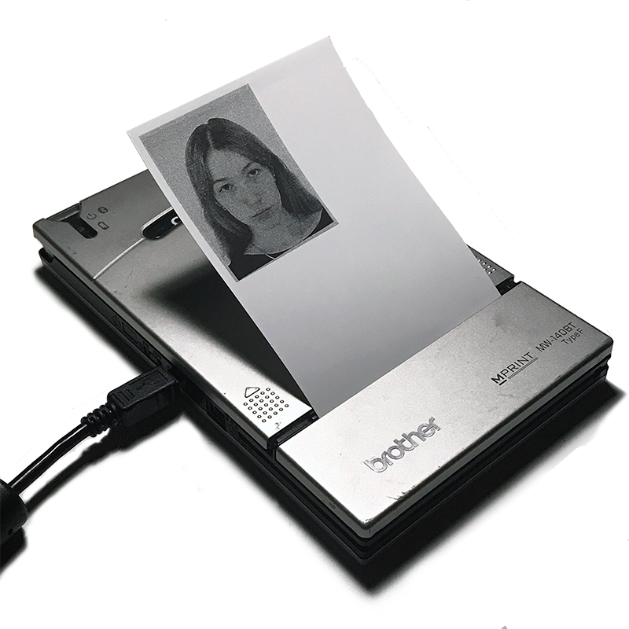

My practice revolves around experimental simulation of traditional
printmaking processes using more accessible technologies such as
photocopiers and inkjet printers, and the contextual themes of absurdity,
mundanity and hyper-reality in contemporary society.
See the repository
for this site on my github account.
kgorm4n@gmail.com
linkedin
github
